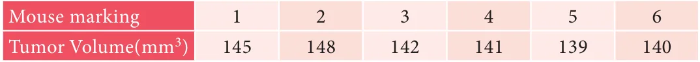
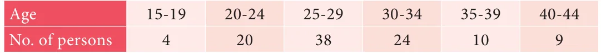
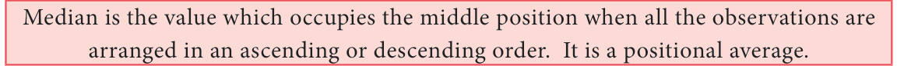
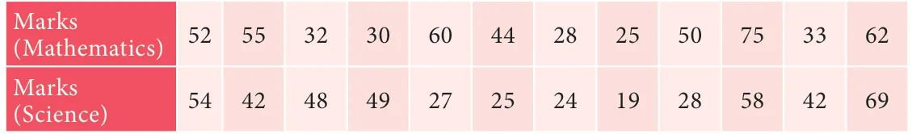
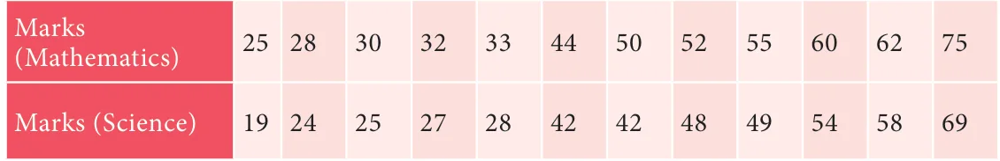
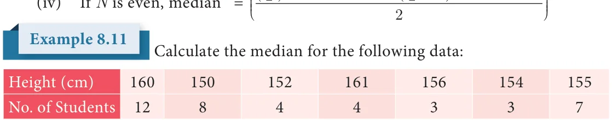
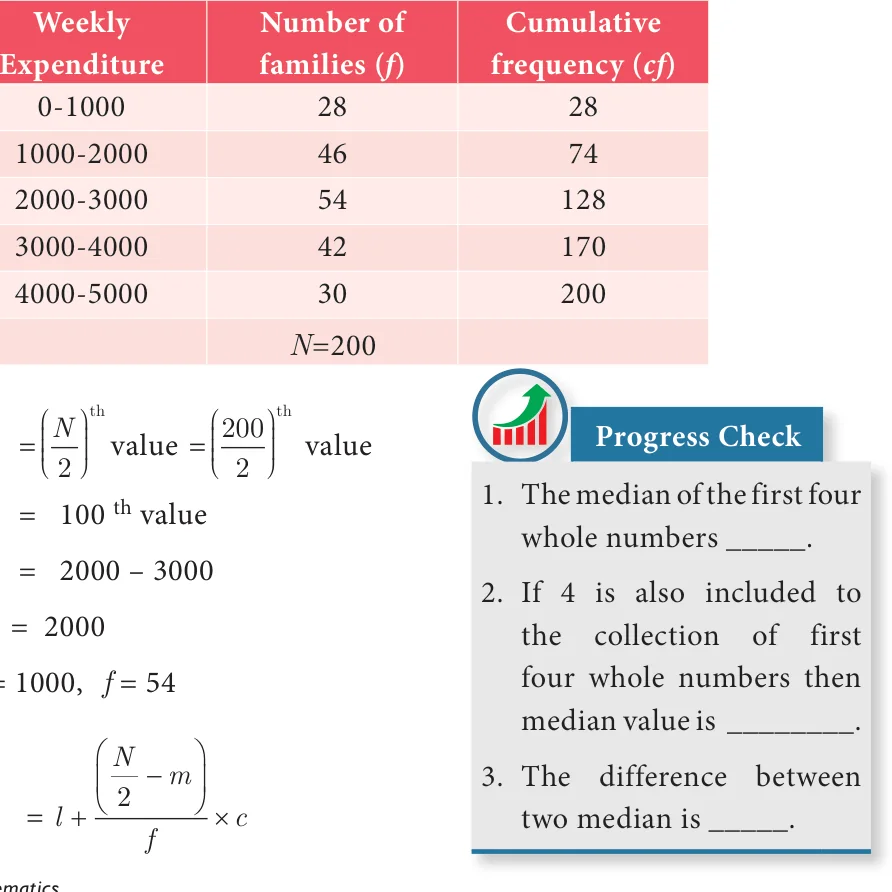
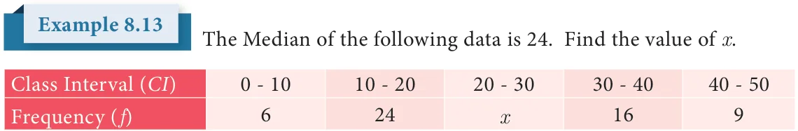

Find the mean.
- If the mean of the following data is 20.2, then find the value of p

- In the class, weight of students is measured for the class records. Calculate mean
weight of the class students using Direct method.

- Calculate the mean of the following distribution using Assumed Mean Method:

- Find the Arithmetic Mean of the following data using Step Deviation Method:

Median
The arithmetic mean is typical of the data because it 'balances' the numbers; it is the number in the 'middle', pulled up by large values and pulled down by smaller values.
Suppose four people of an office have incomes of ₹5000, ₹6000, ₹7000 and ₹8000.
Their mean income can be calculated as \(\frac{5000 + 6000 + 7000 + 8000}{4}\) which gives ₹6500. If a fifth person with an income of ₹29000 is added to this group, then the arithmetic mean
of all the five would be \(\frac{5000 + 6000 + 7000 + 8000 + 29000}{5} = \frac{55000}{5} =\) ₹11000. Can one say that the average income of ₹11000 truly represents the income status of the individuals in the office? Is it not misleading? The problem here is that an extreme score affects the Mean and can move the mean away from what would generally be considered the central area.
In such situations, we need a different type of average to provide reasonable answers.

For example, the height of nine students in a class are 122 cm, 124 cm, 125 cm, 135 cm, 138 cm, 140cm, 141cm, 147 cm, and 161 cm.
- Usual calculation gives Arithmetic Mean to be 137 cm.
- If the heights are neatly arranged in, say, ascending order, as follows
122 cm, 124 cm, 125 cm, 135 cm, 138 cm, 140cm, 141cm, 147 cm, 161 cm, one can observe the value 138 cm is such that equal number of items lie on either side of it. Such a value is called the Median of given readings.

- Suppose a data set has 11 items arranged in order. Then the median is the 6th
item because it will be the middlemost one. If it has 101 items, then 51st item will be the Median. If we have an odd number of items, one can find the middle one easily. In general,
if a data set has n items and n is odd, then the median will be the \(\frac{n+1}{2}\) item.
- If there are 6 observations in the data, how will you find the Median? It will be
the average of the middle two terms. (Shall we denote it as 3.5 term?) If there
are 100 terms in the data, the Median will be 50.5 term! In general, if a data set has n items and n is even, then the Median will be the
average of \(\frac{n}{2}\) and \(\frac{n}{2}\) +1 items.
The following are scores obtained by 11 players in a cricket match
7, 21, 45, 12, 56, 35, 25, 0, 58, 66, 29. Find the median score.
Solution
Let us arrange the values in ascending order. 0,7,12,21,25,29,35,45,56,58,66 The number of values \(= 11\) which is odd
Median = \(\frac{11+1}{2}\) value
= \(\frac{12}{2}\) value \(= 6\) value \(= 29\)

For the following ungrouped data 10, 17, 16, 21, 13, 18, 12, 10, 19, 22. Find the median.
Solution
Arrange the values in ascending order.
10, 10, 12, 13, 16, 17, 18, 19, 21, 22.
The number of values \(= 10\)
Median = Average of \(\frac{10}{2}\) and (102 \(+ 1j\) values
= Average of 5th and 6th values
\(= \frac{16 + 17}{2} = \frac{33}{2} = 16.5\)
The following table represents the marks obtained by a group of 12 students in a class test in Mathematics and Science.

Indicate in which subject, the level of achievement is higher?
Solution
Let us arrange the marks in the two subjects in ascending order.

Since the number of students is 12, the marks of the middle-most student would be
the mean mark of 6 and 7 students.
Therefore, Median mark in Mathematics \(= \frac{44 + 50}{2} = 47\)
Median mark in Science \(= \frac{42 + 42}{2} = 42\)
Here the median mark in Mathematics is greater than the median mark in Science. Therefore, the level of achievement of the students is higher in Mathematics than Science.
8.5.1 Median-Ungrouped Frequency Distribution
Arrange the data in ascending ( or) decending order of magnitude. Construct the cumulative frequency distribution. Let N be the total frequency.
If N is odd, median = \(\frac{N+1}{2}\) observation.
\(^{th}\) \(^{th}\) observation + + observation

Solution
Let us arrange the marks in ascending order and prepare the following data:

Here \(N = 41\)
Median = size of \(\frac{N+1}{2}\) value = size of \(\frac{41+1}{2}\) value = size of 21 value.
th th
If the 41 students were arranged in order (of height), the 21st student would be the middle most one, since there are 20 students on either side of him/her. We therefore need
to find the height against the 21st student. 15 students (see cumulative frequency) have height less than or equal to 154 cm. 22 students have height less than or equal to 155 cm.
This means that the 21st student has a height 155 cm.
st
Therefore, Median \(= 155\) cm
8.5.2 Median - Grouped Frequency Distribution
In a grouped frequency distribution, computation of median involves the following
Steps
- Construct the cumulative frequency distribution.
- Find \(\frac{N}{2}\) term.
- The class that contains the cumulative frequency \(\frac{N}{2}\) is called the median class.
- Find the median by using the formula:
Median \(= l + \frac{N}{2} \frac{}{f} -\) m \(\times c\) Where \(l =\) Lower limit of the median class, \(f =\) Frequency of the median class
\(c =\) Width of the median class, \(N =\) The total frequency \(\sum f\), \(m =\) cumulative frequency of the class preceding the median class
The following table gives the weekly expenditure of 200 families. Find the median of the weekly expenditure.

Solution

Median class \(= \left(\frac{N}{2}\right)^{\text{th}}\) value \(= \left(\frac{200}{2}\right)^{\text{th}}\) value \(= 100^{\text{th}}\) value
Median class = 2000 - 3000
\(\frac{N}{2} = 100\), \(l = 2000\), \(m = 74\), \(c = 1000\), \(f = 54\)
\(\text{Median} = l + \frac{\frac{N}{2} - m}{f} \times c = 2000 + \frac{100 - 74}{54} \times 1000 = 2000 + \frac{26}{54} \times 1000 = 2000 + 481.5 = 2481.5\)

Solution

Since the median is 24 and the median class is \(20 - 30\)

\(l = 20 N = 55 + x\), \(m = 30\), \(c = 10\), \(f = x\)
Median \(= l \frac{N}{2}\) c
m
\(24 = 20\) 552 x 30 10

\(4 = \frac{5x - 25}{x}\) (after simplification)
\(4x = 5x - 25\)
\(5x - 4x = 25 x = 25\)
- Find the median of the given values : 47, 53, 62, 71, 83, 21, 43, 47, 41.
- Find the Median of the given data: 36, 44, 86, 31, 37, 44, 86, 35, 60, 51